Materiais no Cycles
Criar a primeira cena
Comece por apagar a lâmpada Lamp e adicionar um plano como chão e adicionar os seguintes objetos:
a) Suzanne: Em Object Mode, aplique um Modifier Subdivision Surface com 2 níveis de Subdivison. Utilize a ferramenta Smooth.
b) Sphere: Em Edit Mode, selecione metade superior da esfera e apague-a. Em Object Mode, aplique um Modifier Solidify e escolha 0.05 Thickness.
c) Cubo
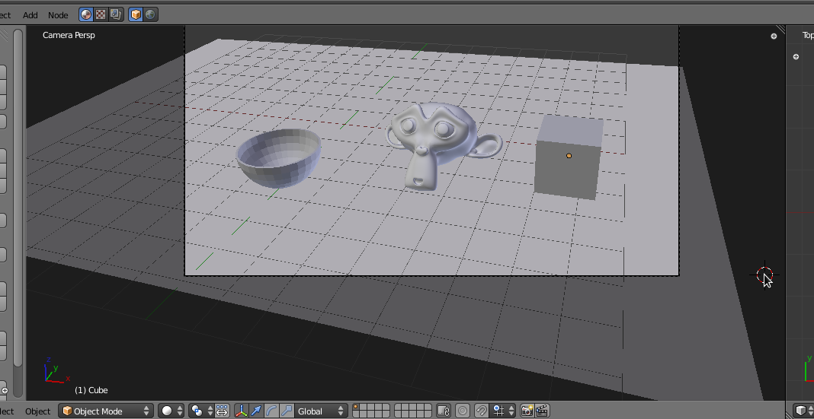Divida o seu ambiente de trabalho para poder ter a janela Node Editor aberta. As configurações dos materiais irão surgir, e podem ser manipuladas, na janela Node Editor.
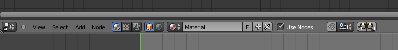Na janela Node Editor ative a opção Use Nodes para ver os nós que correspondem ao material aplicado no objeto selecionado.
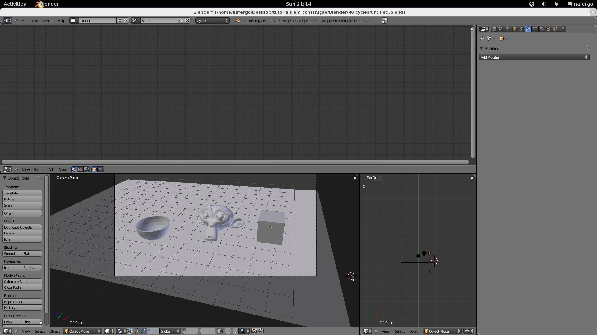Selecione o cubo e aplique um material Diffuse de cor verde.
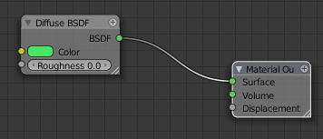 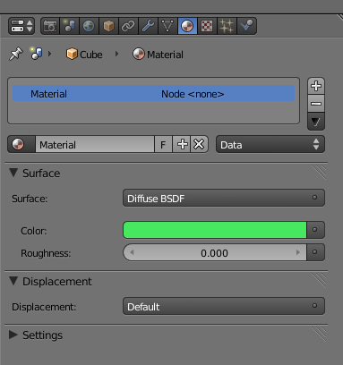Selecione a meia-esfera e aplique um material Glass.
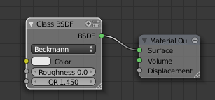 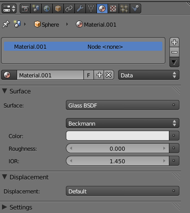Selecione a Suzanne e aplique um material Gloss cinza.
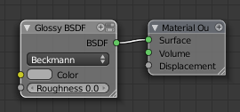 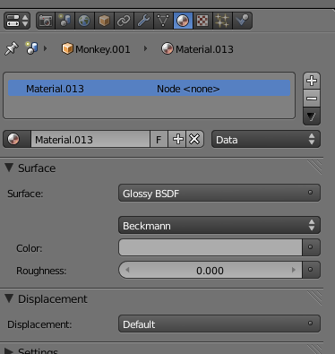Selecione o plano e aplique um material Gloss. Não altere os valores pré-definidos.
Nas opções World, adicione um Background com características similares às da configuração abaixo.
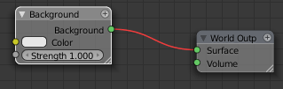 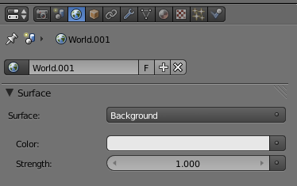Na janela de opções de Render, defina 20 Samples para o Preview. Os Samples definem a qualidade da renderização. Se tiver 0 samples a renderização nunca é interrompida, é infinita, vão sendo acrescentados sempre mais Samples.
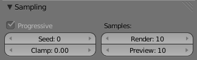Em cima, pode definir CPU ou GPU (se tiver as drivers e placa gráfica compatíveis) como dispositivo de renderização.
Para ver o resultado na janela de 3D View, ative a nova opção Rendered existente no menu de Viewport shading.
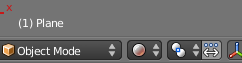 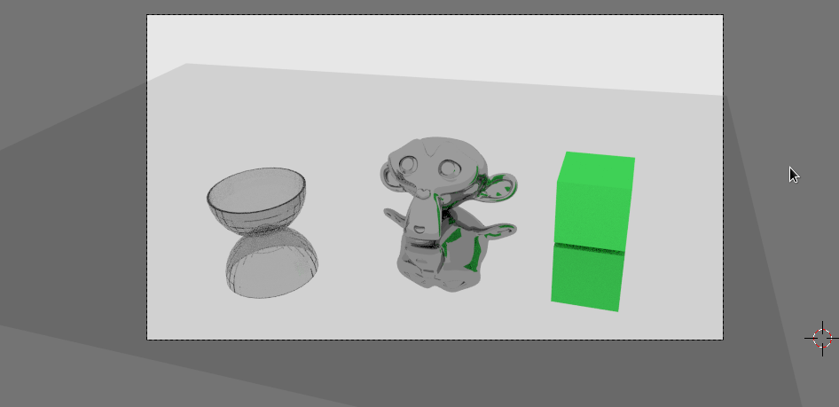Sugestões: seleccione o plano e altere os valores de Roughness para 0.3 para ver a diferença no reflexo.
Selecione a câmara. Na janela de opções da câmara, defina qual o objeto que pretende focar (no nosso exemplo, escolhemos o Cube) e altere o valor de Aperture para configurar a Profundidade de Campo.
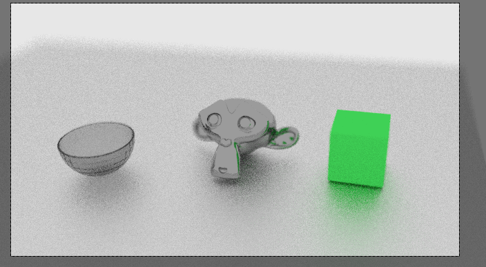 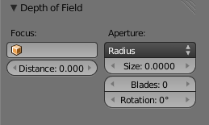Na janela de opções de World, adicione um Environment Texture e escolha uma imagem HDR para iluminar a sua cena. No nosso caso, fizemos download de uma imagem de Paul Debevec disponível em: http://ict.debevec.org/~debevec/Probes/stpeters_probe.hdr
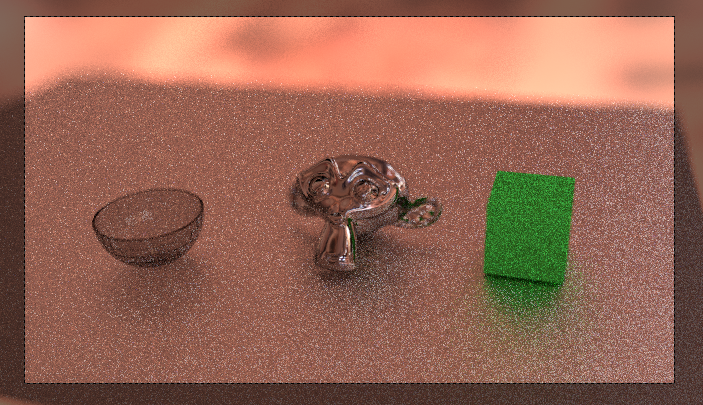 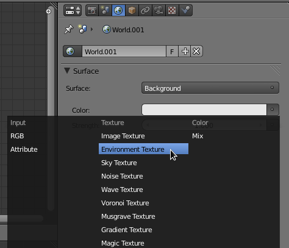O noise (grão) da imagem revela que são necessárias mais Samples. Se desejar, pode aumentar o número de Samples do Preview.
Aumente a Strength do Background para melhorar a iluminação da sua cena. Para adicionar Luzes, adicione um plano e aplique-lhe o material Emission. Aumente as Samples de Render e pode renderizar!
Nota: quando estiver preparado para renderizar a imagem final, certifique-se que a janela 3D View não tem o Viewport Shading no Rendered!
Alguns Shader Nodes
Volume Scatter: Utilizado em fumo, nevoeiro, etc.
Volume Absorption: Absorve luz quando esta atravessa o volume.
Emission: Para além do sistema comum de luzes, o Cycles permite que um qualquer objeto possa servir como lâmpada, emitir iluminação. Este material transforma um objeto em uma lâmpada, é um material emissor. Strength determina a intensidade da emissão do material. Quando conectado ao encaixe Surface do nó Material Output, transforma a superfície do volume em emissor de luz. Quando conectado ao encaixe Volume do nó Material Output, transforma o próprio volume em emissor de luz.
Toon: Combinação de Diffuse e Glossy para criar efeitos toon (cartoon)
Mix Shader: Cria duas slots permitindo misturar dois materiais. Permite que as próprias slots criadas sejam ocupadas por outros Mix Closures, criando um material ainda mais complexo. Fac determina o grau de mistura entre as duas slots, 0.500 significa que o material é criado em percentagens iguais pelas duas slots.
Transparent: Material transparente, sem refração ou Fresnel. O valor Alfa é o mesmo em todo o material.
Velvet: Material que ilumina/clareia os limites do objeto. Sigma determina quanto do objeto é iluminado. Fresnel determina quão brilhante é o objeto.
Translucent: Material translúcido, parte da luz brilha através do material enquanto a outra parte é refletida. Não existem reflexos brilhantes.
Diffuse: material básico, aspeto barrento e sem qualquer reflexo brilhante, dispersa a luz em todas as direções de forma uniforme. É recomendado para superfícies não polidas como paredes de interiores, gesso, argila, barro, tinta matte, etc.
Background: É o material utilizado no World, define o fundo e a iluminação global. Strength determina a intensidade do material.
Subsurface Scattering: Para materiais como pele, cera ou leite. Em vez da luz ser simplesmente refletida na superfície, penetra na superfície e ressalta (bounce) internamente antes de ser absorvida ou abandonar a superfície.
Ambient Occlusion: Permite controlar a quantidade de AO (se o AO tiver sido ativado) que afeta um material.
Add Shader: Adiciona materiais em vez de misturá-los.
Glossy: Material brilhante, com reflexão, recomendado para superfícies brilhantes (metálicas, plásticos, madeira laqueada, tinta glossy, etc.).
Holdout: Útil para compositing, cria um vazio/buraco com Alpha 0. Para funcionar, tem de ativar a opção Transparent nas opções de Render (Film).
Glass: Material transparente e com refração, utilizado para criar objetos feitos de vidro, plásticos transparentes, líquidos nítidos, etc. Roughness determina a rugosidade ou polimento do vidro. Fresnel controla quão definido é o vidro e grau de refração da luz. Com Zero, o vidro não refrata a luz e a transparência é determinada pela quantidade de camadas de malha que o raio de luz atravessa. Fresnel elevado resulta num vidro mais definido e com maior refração.
Texturas de imagens
1. Para adicionar uma imagem como textura, comece por atribuir um material ao objeto. Neste caso, escolhemos o material de tipo Diffuse.
2. Na opção Color, clique no cursor do lado direito (círculo pequeno), escolha Image Texture.
3. Irá surgir uma caixa para localizar a imagem que pretende utilizar.
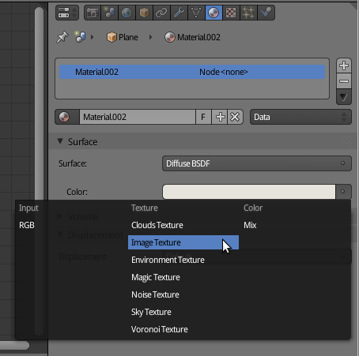 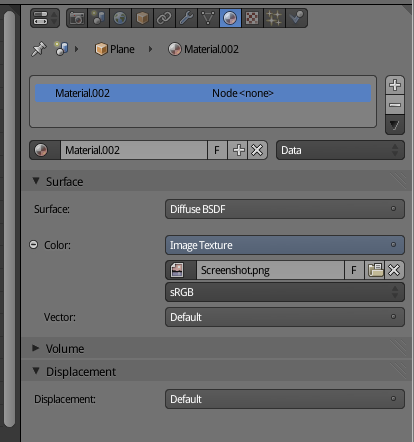Ao contrário do Blender Internal que utiliza por pré-definição as coordenadas Generated, o Cycles tem as coordenadas UV ativadas por pré-definição. Isso significa que, no Cycles, quando adiciona uma imagem como textura, tem duas opções: ativar Generated nas Texture Coordinates ou fazer Unwrap ao seu objeto.
As opções disponíveis em Vector permitem configurar o modo como a textura é mapeada e as coordenadas utilizadas. Para configurar melhor as opções disponíveis, recomenda-se a utilização do Node Editor.
O nó Mapping permite manipular a textura, configurar Location, Rotation e Scale, e deve ser inserido entre os nós Texture Coordinates e Image Texture.
Bump e Normal maps
Bump map - opção 1
Pode criar um Bump Map através da opção Displacement existente no nó Material Output. Abaixo são apresentados alguns exemplos para ilustrar o processo.
Na imagem abaixo, temos uma esfera com um material Diffuse. Está a ser utilizada uma imagem HDR (high dynamic range) no Background para iluminação. Repare que a esfera está a ser iluminada com uma luz que vem do lado direito e com a direção correta tendo em conta a posição do sol na imagem.
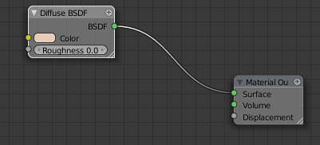 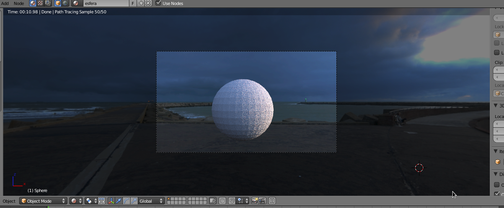Na imagem abaixo, introduzimos um nó de textura Voronoi e ligámos o mesmo à opção Displacement. Não foi manipulada a malha da esfera. A esfera continua a ser exatamente a mesma, a geometria não foi alterada. A textura Voronoi está a ser utilizada para modificar o aspeto da esfera.
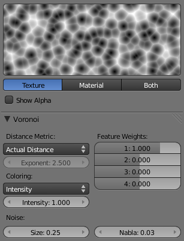O Scale presente no nó da textura pode ser utilizado para aumentar/reduzir a dimensão das crateras. Por pré-definição, é apresentado um valor de 5 para o Scale.
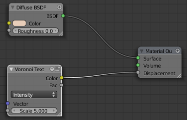 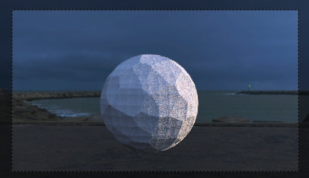Nos conjuntos abaixo, introduzimos um nó Math (submenu Convertor) e escolhemos a operação Multiply para poder controlar a intensidade do bump. No primeiro conjunto, o valor de bump é multiplicado por 0.5 e, portanto, a intensidade é metade da existente por pré-definição. No segundo conjunto, o valor de Bump é multiplicado por 20!
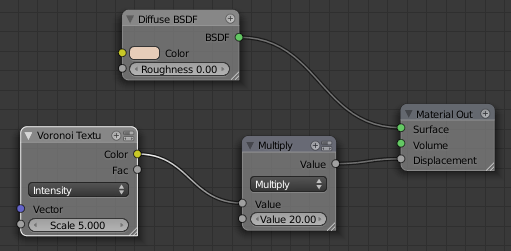 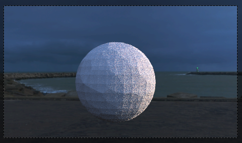 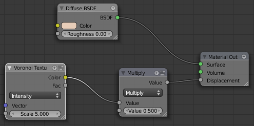 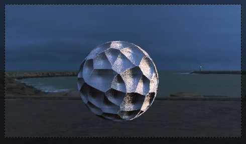No exemplo seguinte, utilizámos uma textura de imagem e um plano. O plano tem apenas 4 vértices.
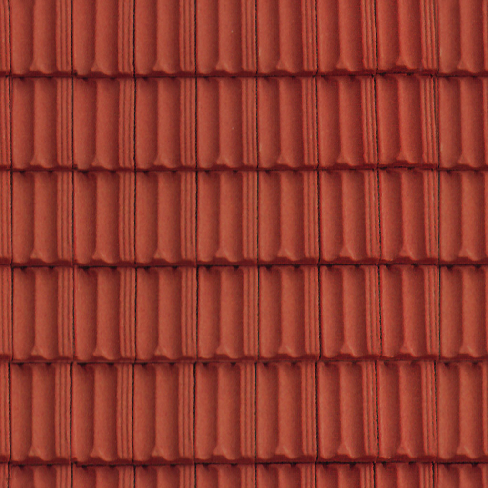Como o Cycles tem coordenadas UV por pré-definição, em Edit Mode, fizemos Unwrap ao plano para criar um UV Layout.
Na configuração de nós é possível ver que estamos a utilizar uma Image Texture (UV Coordinates) para a Surface e mantivemos a Voronoi Texture multiplicada por 20 no Displacement.
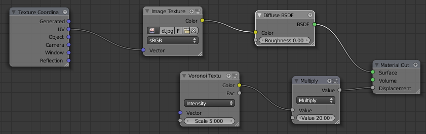 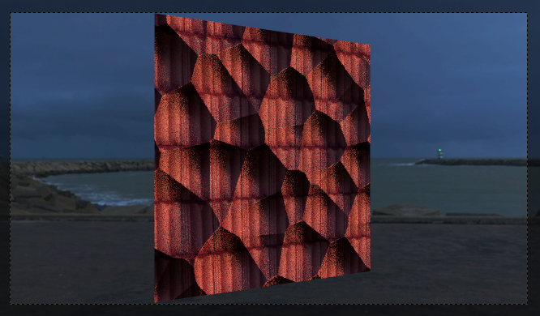No conjunto abaixo, foi retirado o Displacement. O plano apenas tem a textura de imagem.
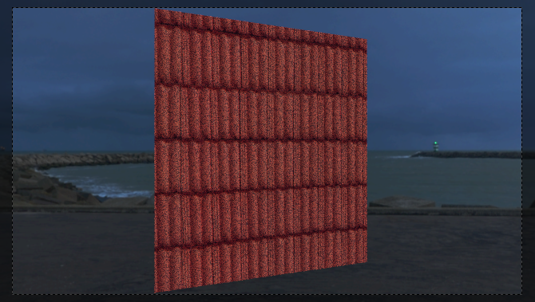No conjunto abaixo estamos a utilizar a mesma imagem para o Surface e para o Displacement. No entanto, nem sempre os resultados são os melhores.
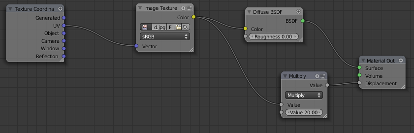
No conjunto abaixo, estamos a utilizar duas imagens. A imagem das telhas com cor para a Surface e a correspondente textura de bump map para o Displacement.
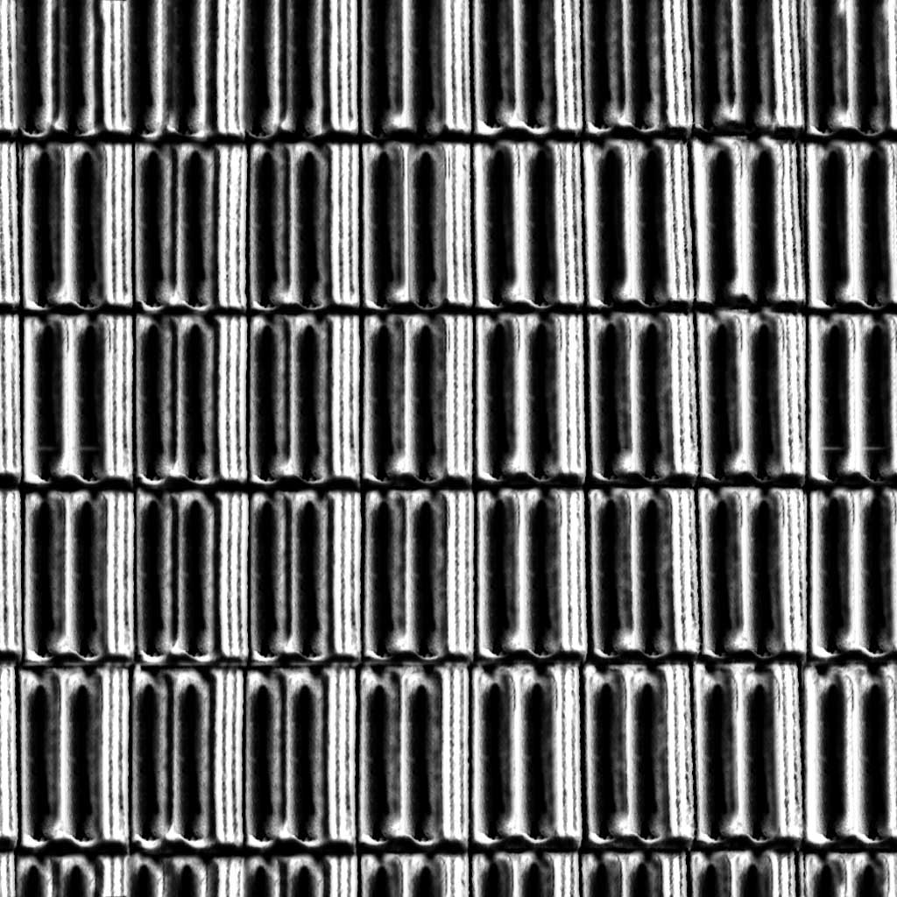A imagem de Bump Map está a ser convertida para BW (black & white) antes de ligar ao nó Multiply. Este passo não é sempre necessário mas, muitas vezes, evita problemas nos Shaders mais complexos que utilizam imagens RGB. Neste caso, como a imagem de Bump Map já é BW, não seria necessário, mas também não cria problemas e é um bom hábito.
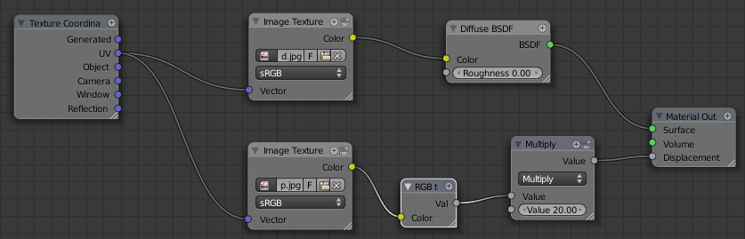 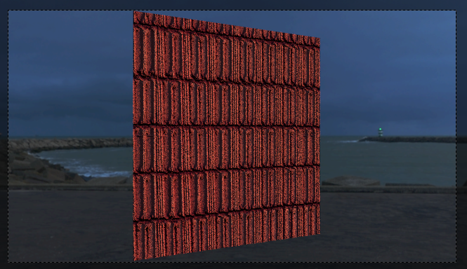Bump map - opção 2 (resultados mais corretos)
Com a introdução do nó Bump, é possível simplificar o processo acima descrito e podemos combinar facilmente diferentes Bumps, etc.
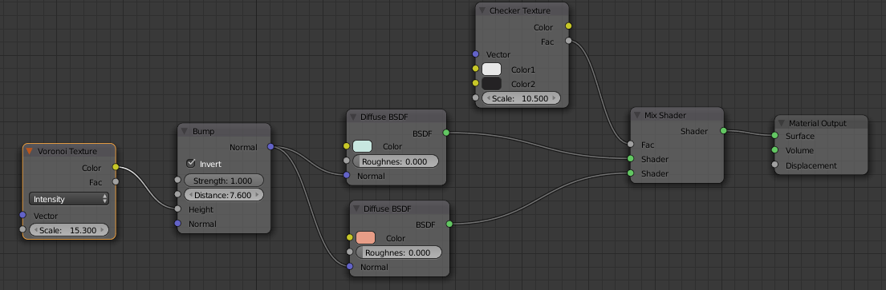Vejamos a imagem abaixo. Um Mix Shader combina dois Diffuse (azul claro e laranja) de acordo com um padrão em xadrez (Checker Texture). Na imagem abaixo, o Bump com a textura Voronoi só afeta os quadrados do primeiro Diffuse.
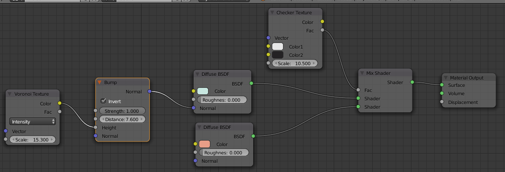 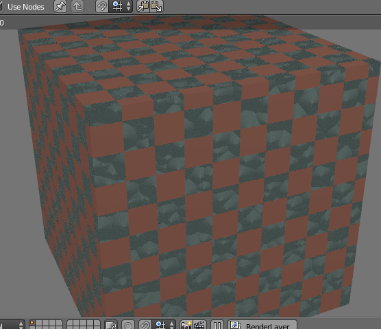Se o nó Bump estiver conectado a ambos os Diffuses permite controlar a aplicação da textura voronoi (Voronoi Texture) a todo o cubo porque afeta todos os materiais.
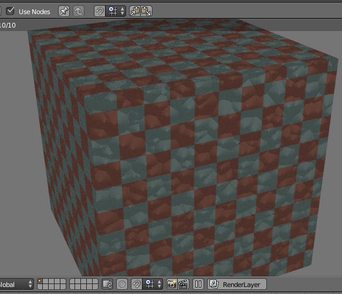Na configuração abaixo utilizámos a textura Checker para criar um relevo na esfera.
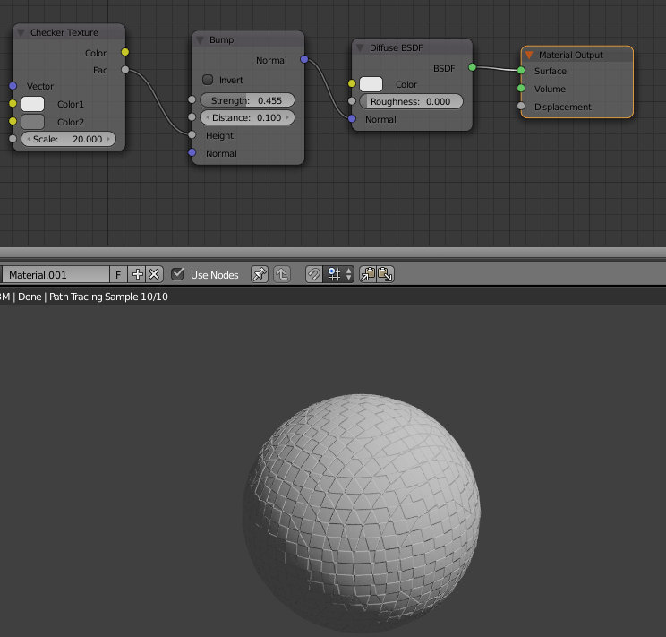Normal maps
Na configuração abaixo utilizámos um normal map disponível aqui.
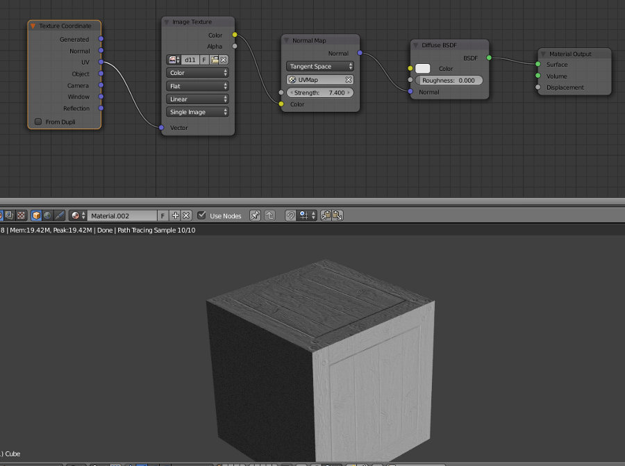